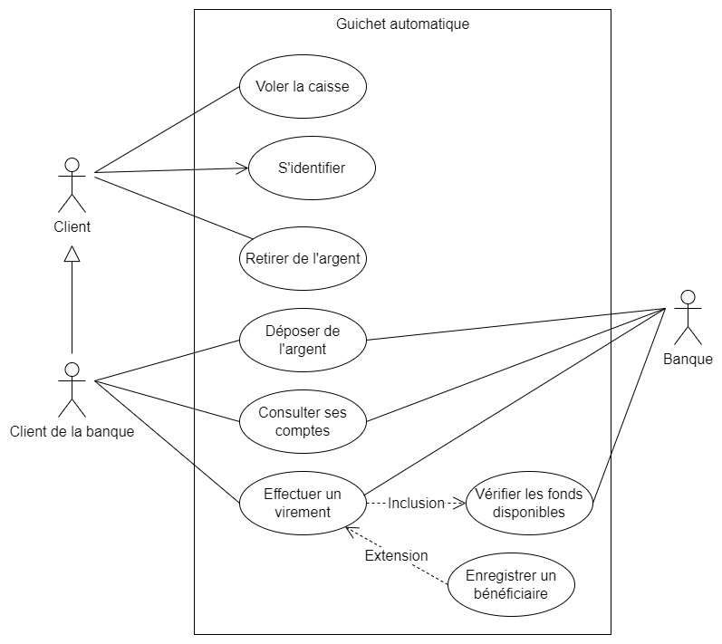

Les cas d'utilisation
L'objectif de définir les cas d'utilisation est de bien comprendre les besoins du client pour rédiger le cahier des charges fonctionnel, aussi appelé le dossier de conception ou dossier fonctionnel. Pour nous aider à isoler les cas d'utilisation on peut répondre aux trois questions suivantes :
- À quoi va servir le système, quel sont les utilisations principales du système?
- Quel est l'environnement du système : qui va l'utiliser, interagir avec lui?
- Quelles sont les limites du système : où s'arrête son rôle?
Pour décrire les cas d'utilisation du système on va utiliser le diagramme des cas d'utilisation et une description textuelle plus précise de chaque cas d'utilisation (scénario).
Scénarios d'utilisation
- Séquences d'étapes décrivant une interaction entre l'utilisateur et le système.
- Elles permettent à l'utilisateur de réaliser un objectif.
Exemple
- Système : Site de vente en ligne
- Scénario : Commander
- Le client s'authentifie dans le système puis choisit une adresse et un mode de livraison. Le système indique le montant total de sa commande au client. Le client donne ses informations de paiement. La transaction n'est pas autorisée, le système invite le client à changer de mode de paiement. Le client modifie ses informations. La transaction est effectuée et le système en informe le client par courriel.
Le cas d'utilisation sera l'objectif que cherche à réaliser l'utilisateur qui effectue ces scénarios. Dans l'exemple plus haut le cas serait commander qui correspond à un ensemble de scénarios possibles.
Cas d'utilisation
Les cas d'utilisations représentent les fonctionnalités principales du système, celles pour lequel il sera utilisé. C'est un ensemble de scénarios réalisant un objectif pour l'utilisateur. On va utiliser un diagramme des cas d'utilisations pour illustrer les cas d'un système. Dans le diagramme on retrouve principalement ces deux éléments :
Acteurs : Personnes, organisations, autres systèmes qui intéragissent avec le système
- Il a un ou plusieurs rôles à jouer envers le système
- On l'identifie par le nom de son rôle. (Client, Caissier, Banque)
Cas d'utilisation : Les fonctionnalités du système visible de l'extérieur
- Ces une action initialisée par un acteur depuis l'extérieur du système
- On utilise un verbe à l'infinitif pour décrire l'action dans le diagramme (Commander, Faire un paiement, Se connecter)
Les cas d'utilisations décrivent seulement le fonctionnement visible du système et non son fonctionnement interne.
Diagramme de cas d'utilisation
Le diagramme des cas d'utilisation est un dessin très simple qui comporte les éléments suivants
- Les acteurs
- Les cas d'utilisation
- Le système
- Les relations entre les acteurs et les cas d'utilisation
On essaie de garde le diagramme le plus épuré possible, il n'y aura que très peu de texte et il doit être le plus précis et concis possible.
Acteurs
Un acteur est quelqu'un ou quelque chose qui utilise le système afin d'accomplir un objectif. On le représente par un "bonhomme allumette".
Il peut être
- Une personne
- Une organisation
- Un autre système
- Un dispositif externe
Les acteurs sont des objets externes, ils doivent toujours être placé en dehors du système. Ils représentent des catégories, des objets et non des individus. On va parler de client en général de la banque et non de l'usager x qui utilise les services de celle-ci. Les acteurs sont divisés en deux catégorie :
- Acteurs primaires : Initialise l'utilisation du système. Se situe à gauche du système dans le diagramme
- Acteurs secondaires : Réagit aux actions du système. Se situe à droite du système dans le diagramme
exemple : Le client de la banque serait un acteur primaire et la banque un acteur secondaire.
Cas d'utilisation
Comme on l'a vu plus haut, le cas d'utilisation représente une action qui accomplit une tâche dans notre système. La description commence généralement par un verbe et doit être courte mais descriptive. Le cas d'utilisation sera inscrit dans un cercle placé à l'intérier du rectangle du système.
Le système
Le système est ce qu'on développe. Il peut prendre plusieurs forme : Site internet, application mobile, composante d'un logiciel déjà existant. On le représente par un rectangle dans le diagramme. On inscrit le nom du système centré dans le haut du rectangle. Tout ce qui est à l'intérieur du rectangle ce déroule dans le système.
Les relations
On a vu qu'un acteur utilise notre système pour atteindre un objectif. Donc chaque acteur va interagir avec au moins un cas d'utilisation de notre système. On va lier l'acteur et le ou les cas d'utilisation par un trait entre ceux-ci.
Les types de relations
- L'association : Communication ou interaction de base entre l'acteur et un cas d'utilisation
- L'inclusion : Relation entre un cas d'utilisation de base et un cas d'utilisation inclus. Ex Connexion à l'application et vérifier le mot de passe. À chaque fois que le cas d'utilisation est exécuté, le cas d'utilisation inclus est exécuté en même temps. Le cas d'utilisation de base ne sera pas complet tant que ses cas d'utilisation inclus ne sont pas terminés. On trace une ligne pointillé entre les deux avec une flèche vers le cas inclus et on inscrit inclusion sur la flèche.
- L'extension : Un cas d'utilisation d'extension est aussi relié à un cas d'utilisation de base mais il sera effectué seulement si certain critère sont remplis. Il n'est pas systématiquement lancé à chaque utilisation du cas de base. On trace une ligne pointillé entre les deux avec une flèche vers le cas de base et on inscrit extension sur la flèche.
- La généralisation (ou héritage) : Quand deux cas partage une même fonction mais que l'un deux réalise des actions supplémentaires, il y a une relation de généralisation ou d'héritage entre les deux. Le cas d'utilisation de base est appelé le parent et le cas d'utilisation spécialisé l'enfant. Chaque enfant partage les caractéristiques du parent mais réalise des actions supplémentaires qui lui sont propre. On peut aussi avoir des généralisations entre les acteurs. On trace une trait plein entre les deux cas avec une flèche pointant vers le parent.
Exercice
Pour mettre en pratique ces notions, on va créer un diagramme des cas d'utilisation d'un guichet automatique. Dans ce guichet n'importe qui peut retirer de l'argent, en autant que la personne possède un compte dans une institution banquaire. Par contre les clients de la banque qui opère le guichet on accès à plus d'option, dont la consultation de leurs comptes, la possibilité de faire un dépôt et aussi de faire des virements de fond vers d'autres comptes. Peu importe l'opération, le client doit tout d'abord s'identifier au guichet avec sa carte bancaire. Le client de la banque qui veut effectuer un virement de fond à un bénéficaire peut l'ajouter s'il n'est pas déjà dans sa liste.
À l'aide d'un logiciel de modélisation, je vous suggère de télécharger draw.io, créez le diagramme des cas d'utilisation qui correspond à cette situation.
